Chapter 44: Ecology and the Biosphere¶
Introduction¶
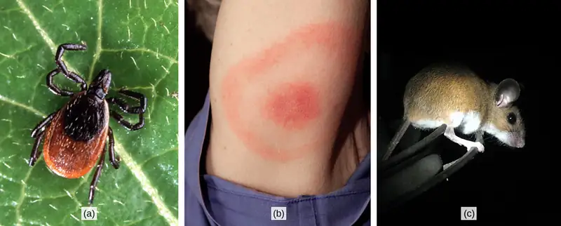
Why study ecology? Perhaps you are interested in learning about the natural world and how living things have adapted to the physical conditions of their environment. Or, perhaps you’re a future physician seeking to understand the connection between your patients' health and their environment.
Humans are a part of the ecological landscape, and human health is one important part of human interaction with our physical and living environment. Lyme disease, for instance, serves as one modern-day example of the connection between our health and the natural world (Figure 44.1). More formally known as Lyme borreliosis, Lyme disease is a bacterial infection that can be transmitted to humans when they are bitten by the deer tick (Ixodes scapularis in the eastern U.S., and Ixodes pacificus along the Pacific coast). Deer ticks are the primary vectors (a vector is an organism that transmits a pathogen) for this disease. However, not all ticks carry the pathogen, and not all deer ticks carry the bacteria that will cause Lyme disease in humans. Also, the ticks I. scapularis and pacificus can have other hosts besides deer. In fact, it turns out that the probability of infection depends on the type of host upon which the tick develops: a higher proportion of ticks that live on white-footed mice carry the bacterium than do ticks that live on deer. Knowledge about the environments and population densities in which the host species is abundant would help a physician or an epidemiologist better understand how Lyme disease is transmitted and how its incidence could be reduced.
44.1 The Scope of Ecology¶
Learning Objectives
By the end of this section, you will be able to do the following:
- Define ecology and the four basic levels of ecological research
- Describe examples of the ways in which ecology requires the integration of different scientific disciplines
- Distinguish between abiotic and biotic components of the environment
- Recognize the relationship between abiotic and biotic components of the environment
Ecology is the study of the interactions of living organisms with their environment. One core goal of ecology is to understand the distribution and abundance of living things in the physical environment. Attainment of this goal requires the integration of scientific disciplines inside and outside of biology, such as mathematics, statistics, biochemistry, molecular biology, physiology, evolution, biodiversity, geology, and climatology.
Interactive
Climate change can alter where organisms live, which can sometimes directly affect human health. Watch the PBS video “Feeling the Effects of Climate Change” in which researchers discover a pathogenic organism living far outside of its normal range.
Levels of Ecological Study¶
When a discipline such as biology is studied, it is often helpful to subdivide it into smaller, related areas. For instance, cell biologists interested in cell signaling need to understand the chemistry of the signal molecules (which are usually proteins) as well as the result of cell signaling. Ecologists interested in the factors that influence the survival of an endangered species might use mathematical models to predict how current conservation efforts affect endangered organisms.
To produce a sound set of management options, a conservation biologist needs to collect accurate data, including current population size, factors affecting reproduction (like physiology and behavior), habitat requirements (such as plants and soils), and potential human influences on the endangered population and its habitat (which might be derived through studies in sociology and urban ecology). Within the discipline of ecology, researchers work at four general levels, which sometimes overlap. These levels are organism, population, community, and ecosystem (Figure 44.2).
![The figure gives an overview of some biological levels of organization with example photos. Each individual pine tree (pictured) in a forest is an organism. Together, all the pine trees in a forest (pictured) make up a population. All the plant and animal species comprise a community, pictured as a marmot on a forest floor. Those three levels are grouped in a box with an arrow to the larger level of an ecosystem, which includes living organisms and the environment they live in. An example is a coastal ecosystem in the southeastern United states, pictured as a body of water, behind which is a stand of tall grasses developing into more dense vegetation and trees as distance from the water increases. A final arrow points to the level of a biosphere, encompassing all ecosystems on Earth and pictured as a map of the Earth showing vegetation patterns.](img/figure-b44-01-04.webp)
Organismal Ecology¶
Researchers studying ecology at the organismal level are interested in the adaptations that enable individuals to live in specific habitats. These adaptations can be morphological, physiological, and behavioral. For instance, the Karner blue butterfly (Lycaeides melissa samuelis) (Figure 44.3) is considered a specialist because the females only oviposit (that is, lay eggs) on wild lupine (Lupinus perennis). This specific requirement and adaptation means that the Karner blue butterfly is completely dependent on the presence of wild lupine plants for its survival.
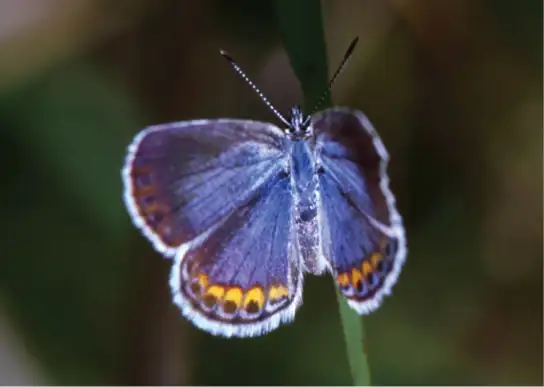
After hatching, the (first instar) caterpillars emerge and spend four to six weeks feeding solely on wild lupine (Figure 44.4). The caterpillars pupate as a chrysalis to undergo the final stage of metamorphosis and emerge as butterflies after about four weeks. The adult butterflies feed on the nectar of flowers of wild lupine and other plant species, such as milkweeds. Generally there are two broods of the Karner blue each year.
A researcher interested in studying Karner blue butterflies at the organismal level might, in addition to asking questions about egg laying requirements, ask questions about the butterflies’ preferred thoracic flight temperature (a physiological question), or the behavior of the caterpillars when they are at different larval stages (a behavioral question).
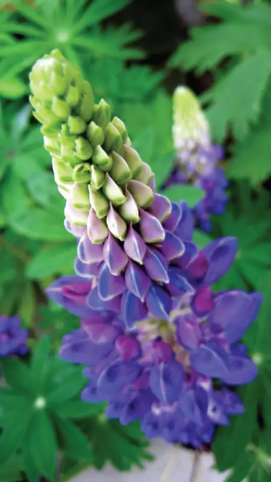
Population Ecology¶
A population is a group of interbreeding organisms that are members of the same species living in the same area at the same time. (Organisms that are all members of the same species are called conspecifics.) A population is identified, in part, by where it lives, and its area of population may have natural or artificial boundaries. Natural boundaries might be rivers, mountains, or deserts, while artificial boundaries may be mowed grass, manmade structures, or roads. The study of population ecology focuses on the number of individuals in an area and how and why population size changes over time.
For example, population ecologists are particularly interested in counting the Karner blue butterfly because it is classified as a federally endangered species. However, the distribution and density of this species is highly influenced by the distribution and abundance of wild lupine, and the biophysical environment around it. Researchers might ask questions about the factors leading to the decline of wild lupine and how these affect Karner blue butterflies. For example, ecologists know that wild lupine thrives in open areas where trees and shrubs are largely absent. In natural settings, intermittent wildfires regularly remove trees and shrubs, helping to maintain the open areas that wild lupine requires. Mathematical models can be used to understand how wildfire suppression by humans has led to the decline of this important plant for the Karner blue butterfly.
Community Ecology¶
A biological community consists of the different species within an area, typically a three-dimensional space, and the interactions within and among these species. Community ecologists are interested in the processes driving these interactions and their consequences. Questions about conspecific interactions often focus on competition among members of the same species for a limited resource. Ecologists also study interactions between various species; members of different species are called heterospecifics. Examples of heterospecific interactions include predation, parasitism, herbivory, competition, and pollination. These interactions can have regulating effects on population sizes and can impact ecological and evolutionary processes affecting diversity.
For example, Karner blue butterfly larvae form mutualistic relationships with ants (especially Formica spp). Mutualism is a form of long-term relationship that has coevolved between two species and from which each species benefits. For mutualism to exist between individual organisms, each species must receive some benefit from the other as a consequence of the relationship. Researchers have shown that there is an increase in survival when ants protect Karner blue butterfly larvae (caterpillars) from predaceous insects and spiders, an act known as “tending.” This might be because the larvae spend less time in each life stage when tended by ants, which provides an advantage for the larvae. Meanwhile, to attract the ants, the Karner blue butterfly larvae secrete ant-like pheromones and a carbohydrate-rich substance that is an important energy source for the ants. Both the Karner blue larvae and the ants benefit from their interaction, although the species of attendant ants may be partially opportunistic and vary over the range of the butterfly.
Ecosystem Ecology¶
Ecosystem ecology is an extension of organismal, population, and community ecology. The ecosystem is composed of all the biotic components (living things) in an area along with the abiotic components (nonliving things) of that area. Some of the abiotic components include air, water, and soil. Ecosystem biologists ask questions about how nutrients and energy are stored and how they move among organisms and through the surrounding atmosphere, soil, and water.
The Karner blue butterflies and the wild lupine live in an oak-pine barren habitat. This habitat is characterized by natural disturbance and nutrient-poor soils that are low in nitrogen. The availability of nutrients is an important factor in the distribution of the plants that live in this habitat. Researchers interested in ecosystem ecology could ask questions about the importance of limited resources and the movement of resources, such as nutrients, though the biotic and abiotic portions of the ecosystem.
Career Connection: Ecologist
A career in ecology contributes to many facets of human society. Understanding ecological issues can help society meet the basic human needs of food, shelter, and health care. Ecologists can conduct their research in the laboratory and outside in natural environments (Figure 44.5). These natural environments can be as close to home as the stream running through your campus or as far away as the hydrothermal vents at the bottom of the Pacific Ocean. Ecologists manage natural resources such as white-tailed deer populations (Odocoileus virginianus) for hunting or aspen (Populus spp.) timber stands for paper production. Ecologists also work as educators who teach children and adults at various institutions including universities, high schools, museums, and nature centers. Ecologists may also work in advisory positions assisting local, state, and federal policymakers to develop laws that are ecologically sound, or they may develop those policies and legislation themselves. To become an ecologist requires at least an undergraduate degree, usually in a natural science. The undergraduate degree is often followed by specialized training or an advanced degree, depending on the area of ecology selected. Ecologists should also have a broad background in the physical sciences, as well as a solid foundation in mathematics and statistics.
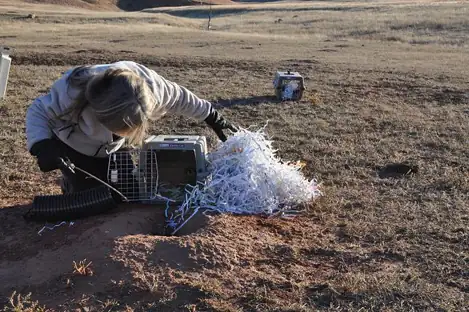
Interactive
Visit this site to see Stephen Wing, a marine ecologist from the University of Otago, discuss the role of an ecologist and the types of issues ecologists explore.
44.2 Biogeography¶
Learning Objectives
By the end of this section, you will be able to do the following:
- Define biogeography
- List and describe abiotic factors that affect the global distribution of plant and animal species
- Compare the impact of abiotic forces on aquatic and terrestrial environments
- Summarize the effects of abiotic factors on net primary productivity
Many forces influence the communities of living organisms present in different parts of the biosphere (all of the parts of Earth inhabited by life). The biosphere extends into the atmosphere (several kilometers above Earth) and into the depths of the oceans. Despite its apparent vastness to an individual human, the biosphere occupies only a minute space when compared to the known universe. Many abiotic forces influence where life can exist and the types of organisms found in different parts of the biosphere. The abiotic factors influence the distribution of biomes: large areas of land with similar climate, flora, and fauna.
Biogeography¶
Biogeography is the study of the geographic distribution of living things and the abiotic factors that affect their distribution. Abiotic factors such as temperature and rainfall vary based mainly on latitude and elevation. As these abiotic factors change, the composition of plant and animal communities also changes. For example, if you were to begin a journey at the equator and walk north, you would notice gradual changes in plant communities. At the beginning of your journey, you would see tropical wet forests with broad-leaved evergreen trees, which are characteristic of plant communities found near the equator. As you continued to travel north, you would see these broad-leaved evergreen plants eventually give rise to seasonally dry forests with scattered trees. You would also begin to notice changes in temperature and moisture. At about 30 degrees north, these forests would give way to deserts, which are characterized by low precipitation and high insolation (sunlight).
Moving farther north, you would see that deserts are replaced by grasslands or prairies. Eventually, grasslands are replaced by deciduous temperate forests. These deciduous forests give way to the boreal forests and taiga found in the subarctic, the area south of the Arctic Circle. Finally, you would reach the Arctic tundra, which is found at the most northern latitudes. This trek north reveals gradual changes in both climate and the types of organisms that have adapted to environmental factors associated with ecosystems found at different latitudes. However, different ecosystems exist at the same latitude due in part to abiotic factors such as jet streams, the Gulf Stream, and ocean currents. If you were to hike up a mountain, the changes you would see in the vegetation would parallel in many ways those as you move to higher latitudes.
Ecologists who study biogeography examine patterns of species distribution. No species exists everywhere; for example, the Venus flytrap (Dionaea muscipula) is endemic to a small area in North and South Carolina. An endemic species is one which is naturally found only in a specific geographic area that is usually restricted in size. Other species are generalists: species which live in a wide variety of geographic areas; the raccoon (Procyon spp.) for example, is native to most of North and Central America.
Species distribution patterns are based on biotic and abiotic factors and their influences during the very long periods of time required for species evolution; therefore, early studies of biogeography were closely linked to the emergence of evolutionary thinking in the eighteenth century. Some of the most distinctive assemblages of plants and animals occur in regions that have been physically separated for millions of years by geographic barriers. Biologists estimate that Australia, for example, has between 600,000 and 700,000 species of plants and animals. Approximately 3/4 of living plant and mammal species are endemic species found solely in Australia (Figure 44.6ab).
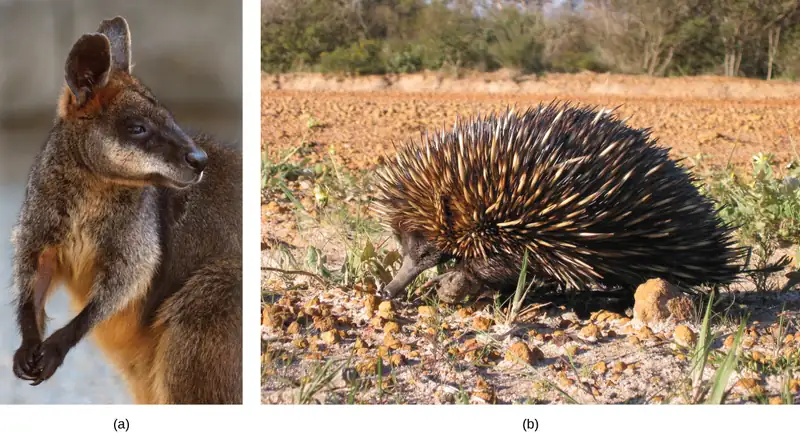
Sometimes ecologists discover unique patterns of species distribution by determining where species are not found. Despite being tropical, Hawaii, for example, has no native land species of reptiles or amphibians, only a few native species of butterflies, and only one native terrestrial mammal, the hoary bat. Most of New Guinea, as another example, lacks placental mammals.
Interactive
Check out this video to observe a platypus swimming in its natural habitat in New South Wales, Australia.
Like animals, plants can be endemic or generalists: endemic plants are found only on specific regions of the Earth, while generalists are found on many regions. Isolated land masses—such as Australia, Hawaii, and Madagascar—often have large numbers of endemic plant species. Some of these plants are endangered due to human activity. The forest gardenia (Gardenia brighamii), for instance, is endemic to Hawaii; only an estimated 15–20 trees are thought to exist (Figure 44.7).
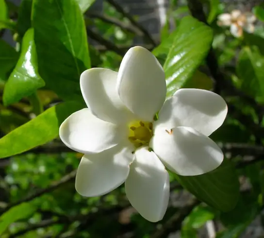
Energy Sources¶
Energy from the sun is captured by green plants, algae, cyanobacteria, and photosynthetic protists. These organisms convert solar energy into the chemical energy needed by all living things. Light availability can be an important force directly affecting the evolution of adaptations in photosynthesizers. For instance, plants in the understory of a temperate forest are shaded when the trees above them in the canopy completely leaf out in the late spring. Not surprisingly, understory plants have adaptations to successfully capture available light that passes through the canopy. One such adaptation is the rapid growth of spring ephemeral plants such as the spring beauty (Claytonia virginica) (Figure 44.8). These spring flowers achieve much of their growth and finish their life cycle (reproduce) early in the season before the trees in the canopy develop leaves.
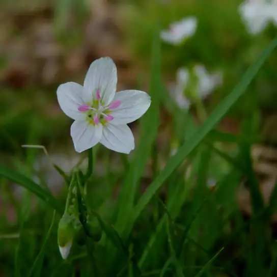
In aquatic ecosystems, the availability of light may be limited because sunlight is absorbed by water, plants, suspended particles, and resident microorganisms. Toward the bottom of a lake, pond, or ocean, there is a zone that light cannot reach (because most wavelengths except for the shortest blues are absorbed by the water column). Photosynthesis cannot take place there and, as a result, a number of adaptations have evolved that enable living things to survive without light. For instance, aquatic plants have photosynthetic tissue near the surface of the water. You can think of the broad, floating leaves of a water lily—water lilies cannot survive without light. In environments such as hydrothermal vents, some bacteria extract energy from inorganic chemicals because there is no light for photosynthesis.
The availability of nutrients in aquatic systems such as oceans is also an important aspect of energy or photosynthesis. Many organisms sink to the bottom of the ocean when they die in the open water; when this occurs, the energy and nutrients found in that living organism are sequestered for some time unless ocean upwelling occurs. Ocean upwelling is the rising of deep ocean waters that occurs when prevailing winds blow along surface waters near a coastline (Figure 44.9). As the wind pushes ocean waters offshore, water from the bottom of the ocean moves up to replace this water. As a result, the energy and nutrients once contained in dead organisms become available for reuse by other living organisms.
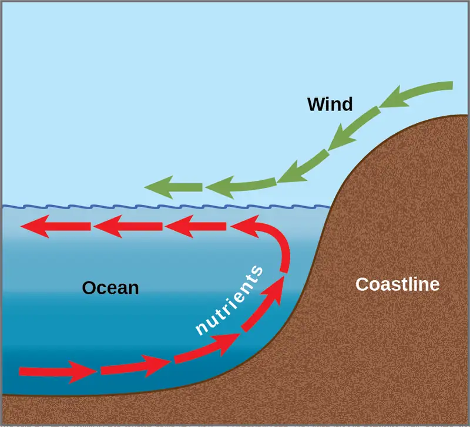
In freshwater systems, such as lakes, the recycling of nutrients occurs in response to air temperature and wind changes. The nutrients at the bottom of lakes are recycled twice each year: in the spring and fall turnover. The spring-and-fall turnover are seasonal processes that recycle nutrients and oxygen from the bottom of a freshwater lake to the top of the lake (Figure 44.10). These turnovers are caused by the formation of a thermocline: layers of water with temperatures that are significantly different from those above and below it.
In wintertime, the surface of lakes found in many northern regions is frozen. However, the water under the ice is slightly warmer, and the water at the bottom of the lake is warmer yet at 4 °C to 5 °C (39.2 °F to 41 °F). Water is densest at about 4 °C; therefore, the deepest water is also the densest. The deepest water is oxygen-poor because the decomposition of organic material at the bottom of the lake uses up available oxygen that cannot be replaced by means of oxygen diffusion into the surface of the water, due to the surface ice layer.
Visual Connection
![The illustration shows a cross-section of a lake in four different seasons. In winter, the surface of the lake is frozen with a temperature of 0 degrees upper case C. The temperature at the bottom of the lake is 4 degrees upper case C, and the temperature just beneath the surface is 2 degrees C. During the spring turnover, the surface ice melts and warms to 4 degrees C. At this temperature, the surface water is denser than the 2 degree C water beneath; therefore, it sinks. In summertime, the surface of the lake is 21 degrees C, and the temperature decreases with depth, to 4 degrees C at the bottom. During the fall turnover, the warm surface water cools to about 10 degrees C; thus, it becomes denser and sinks.](img/figure-44-02-05.webp)
How might turnover in tropical lakes differ from turnover in lakes that exist in temperate regions? Think of the variation, or lack of variation, in seasonal temperature change.
In springtime, air temperatures increase and surface ice melts. When the temperature of the surface water begins to approach 4 °C, the water becomes heavier and sinks to the bottom. The water at the bottom of the lake is then displaced by the heavier and denser surface water and, thus, rises to the top. As that water rises to the top, the sediments and nutrients from the lake bottom are brought along with it. This is called the spring turnover. During the summer months, the lake water stratifies, or forms layers, with the warmest water at the lake surface.
As air temperatures drop in the fall, the temperature of the lake water cools to 4 °C; therefore, this causes fall turnover as the heavy cold water sinks and displaces the water at the bottom. The oxygen-rich water at the surface of the lake then moves to the bottom of the lake, while the nutrients at the bottom of the lake rise to the surface (Figure 44.10). During the winter, the oxygen at the bottom of the lake is used by decomposers and other organisms requiring oxygen, such as fish. It is important to note, however, that the relative transparency of ice also allows the penetration of the shorter wavelengths of visible light so that photosynthesis, especially by algae can continue.
Temperature¶
Temperature affects the physiology of organisms as well as the density and state of water. Temperature exerts an important influence on living things because few living things can survive at temperatures below 0 °C (32 °F) due to metabolic constraints. It is also rare for living things to survive at temperatures exceeding 45 °C (113 °F); this is a reflection of evolutionary response to typical temperatures near the Earth’s surface. Enzymes are most efficient within a narrow and specific range of temperatures; enzyme degradation can occur at higher temperatures. Therefore, organisms either must maintain an internal temperature or they must inhabit an environment that will keep the body within a temperature range that supports metabolism. Some animals have adapted to enable their bodies to survive significant temperature fluctuations, such as seen in hibernation or reptilian torpor. Similarly, some Archaea bacteria have evolved to tolerate extremely hot temperatures such as those found in the geysers within Yellowstone National Park. Such bacteria are examples of extremophiles: organisms that thrive in extreme environments.
The temperature (of both water and air) can limit the distribution of living things. Animals faced with temperature fluctuations may respond with adaptations, such as migration, in order to survive. Migration, the regular movement from one place to another, is an adaptation found in many animals, including many that inhabit seasonally cold climates. Migration solves problems related to temperature, locating food, and finding a mate. For example, the Arctic Tern (Sterna paradisaea) makes a 40,000 km (24,000 mi) round-trip flight each year between its feeding grounds in the southern hemisphere and its breeding grounds in the Arctic Ocean. Monarch butterflies (Danaus plexippus) live in the eastern and western United States in the warmer months, where they build up enormous populations, and migrate to areas around Michoacan, Mexico as well as areas along the Pacific Coast, and the southern United States in the wintertime. Some species of mammals also make migratory forays. Reindeer (Rangifer tarandus) travel about 5,000 km (3,100 mi) each year to find food. Amphibians and reptiles are more limited in their distribution because they generally lack migratory ability. Not all animals that could migrate do so: migration carries risk and comes at a high-energy cost.
Some animals hibernate or estivate to survive hostile temperatures. Hibernation enables animals to survive cold conditions, and estivation allows animals to survive the hostile conditions of a hot, dry climate. Animals that hibernate or estivate enter a state known as torpor: a condition in which their metabolic rate is significantly lowered. This enables the animal to wait until its environment better supports its survival. Some amphibians, such as the wood frog (Rana sylvatica), have an antifreeze-like chemical in their cells, which retains the cells’ integrity and prevents them from freezing and bursting.
Water¶
Water is required by all living things because it is critical for cellular processes. Since terrestrial organisms lose water to the environment, they have evolved many adaptations to retain water.
- Plants have a number of interesting features on their leaves, such as leaf hairs and a waxy cuticle, that serve to decrease the rate of water loss via transpiration and convection.
- Freshwater organisms are surrounded by water and are constantly in danger of having water rush into their cells because of osmosis. Many adaptations of organisms living in freshwater environments have evolved to ensure that solute concentrations in their bodies remain within appropriate levels. One such adaptation is the excretion of dilute urine.
- Marine organisms are surrounded by water with a higher solute concentration than the organism and, thus, are in danger of losing water to the environment because of osmosis. These organisms have morphological and physiological adaptations to retain water and release solutes into the environment. For example, Marine iguanas (Amblyrhynchus cristatus), sneeze out water vapor that is high in salt in order to maintain solute concentrations within an acceptable range while swimming in the ocean and eating marine plants.
Inorganic Nutrients and Soil¶
Inorganic nutrients, such as nitrogen and phosphorus, are important in determining the distribution and the abundance of living things. Plants obtain these inorganic nutrients from the soil when water moves into the plant through the roots. Therefore, soil structure (particle size of soil components), soil pH, and soil nutrient content together all play an important role in the distribution of plants. Animals obtain inorganic nutrients from the food they consume. Therefore, animal distributions are related to the distribution of what they eat. In some cases, animals will follow their food resource as it moves through the environment.
Other Aquatic Factors¶
Some abiotic factors, such as oxygen, are important in aquatic ecosystems as well as terrestrial environments. Terrestrial animals obtain oxygen from the air they breathe. Oxygen availability can be an issue for organisms living at very high elevations, however, where there are fewer molecules of oxygen in the air. In aquatic systems, the concentration of dissolved oxygen is related to water temperature and the speed at which the water moves. Cold water has more dissolved oxygen than warmer water. In addition, salinity, currents, and tidal changes can be important abiotic factors in aquatic ecosystems.
Other Terrestrial Factors¶
Wind can be an important abiotic factor because it influences the rate of evaporation, transpiration, and convective heat loss from the surface of all organisms. The physical force of wind is also important because it can move soil, water, or other abiotic factors, as well as an ecosystem’s organisms.
Fire is another terrestrial factor that can be an important agent of disturbance in terrestrial ecosystems. Some organisms are adapted to fire and, thus, require the high heat associated with fire to complete a part of their life cycle. For example, the jack pine (Pinus banksiana) requires heat from fire for its seed cones to open (Figure 44.11). Through the burning of pine needles, fire adds nitrogen to the soil and limits competition by destroying undergrowth.
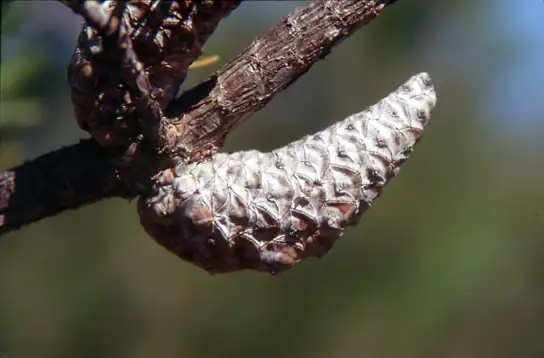
Abiotic Factors Influencing Plant Growth¶
Temperature and moisture are important influences on plant production (primary productivity) and the amount of organic matter available as food (net primary productivity). Net primary productivity is an estimation of all of the organic matter available as food; it is calculated as the total amount of carbon fixed per year minus the amount that is oxidized during cellular respiration. In terrestrial environments, net primary productivity is estimated by measuring the above-ground biomass per unit area, which is the total mass of living plants, excluding roots (whose mass is very difficult to measure). This means that a large percentage of plant biomass which exists underground is not included in this measurement. Net primary productivity is an important variable when considering differences in biomes. Very productive biomes have a high level of aboveground biomass.
Annual biomass production is directly related to the abiotic components of the environment. Environments with the greatest amount of biomass produce conditions in which photosynthesis, plant growth, and the resulting net primary productivity are optimized. The climate of these areas is warm and wet. Photosynthesis can proceed at a high rate, enzymes can work most efficiently, and stomata can remain open without the risk of excessive transpiration; together, these factors lead to the maximal amount of carbon dioxide (CO2) moving into the plant, resulting in high biomass production. The above-ground biomass produces several important resources for other living things, including habitat and food. Conversely, dry and cold environments have lower photosynthetic rates and therefore less biomass. The animal communities living there will also be affected by the decrease in available food.
44.3 Terrestrial Biomes¶
Learning Objectives
By the end of this section, you will be able to do the following:
- Identify the two major abiotic factors that determine terrestrial biomes
- Recognize distinguishing characteristics of each of the eight major terrestrial biomes
The Earth’s biomes are categorized into two major groups: terrestrial and aquatic. Terrestrial biomes are based on land, while aquatic biomes include both ocean and freshwater biomes. The eight major terrestrial biomes on Earth are each distinguished by characteristic temperatures and amount of precipitation. Comparing the annual totals of precipitation and fluctuations in precipitation from one biome to another provides clues as to the importance of abiotic factors in the distribution of biomes. Temperature variation on a daily and seasonal basis is also important for predicting the geographic distribution of the biome and the vegetation type in the biome. The distribution of these biomes shows that the same biome can occur in geographically distinct areas with similar climates (Figure 44.12).
Visual Connection
![This world map shows the eight major biomes, polar ice, and mountains. Tropical forests, deserts and savannas are found primarily in South America, Africa, and Australia. Tropical forests also dominate Southeast Asia. Deserts dominate the Middle East and are found in the southwestern United States. Chaparral is found all around the Mediterranean Sea, in southern Australia, on the southern tip of Africa, and in California in southwestern North America. Temperate forests dominate the eastern United States, Europe, and Eastern Asia. Temperate grasslands dominate the midwestern United States and parts of Asia, and are also found in South America. The boreal forest is found in northern Canada, Europe, and Asia, and tundra exists to the north of the boreal forest in each of these regions. Mountainous regions run the length of North and South America, and are found in northern India, Africa, and parts of Europe. Polar ice covers Greenland.](img/figure-44-03-01.webp)
Which of the following statements about biomes is false?
- Chaparral is dominated by shrubs.
- Savannas and temperate grasslands are dominated by grasses.
- Boreal forests are dominated by deciduous trees.
- Lichens are common in the arctic tundra.
Tropical Wet Forest¶
Tropical wet forests are also referred to as tropical rainforests. This biome is found in equatorial regions (Figure 44.12). The vegetation is characterized by plants with broad leaves that fall and are replaced throughout the year. Unlike the trees of deciduous forests, the trees in this biome do not have a seasonal loss of leaves associated with variations in temperature and sunlight; these forests are “evergreen” year-round.
The temperature and sunlight profiles of tropical wet forests are very stable in comparison to that of other terrestrial biomes, with the temperatures ranging from 20 °C to 34 °C (68 °F to 93 °F). When one compares the annual temperature variation of tropical wet forests with that of other forest biomes, the lack of seasonal temperature variation in the tropical wet forest becomes apparent. This lack of seasonality leads to year-round plant growth, rather than the seasonal (spring, summer, and fall) growth seen in other more temperate biomes. In contrast to other ecosystems, tropical ecosystems do not have long days and short days during the yearly cycle. Instead, a constant daily amount of direct overhead sunlight (11–12 hrs per day) provides more solar radiation, thereby, increased plant growth.
The annual rainfall in tropical wet forests ranges from 125 cm to 660 cm (50–200 in) with some monthly variation. While sunlight and temperature remain fairly consistent, annual rainfall is highly variable. Tropical wet forests typically have wet months in which there can be more than 30 cm (11–12 in) of precipitation, as well as dry months in which there are fewer than 10 cm (3.5 in) of rainfall. However, the driest month of a tropical wet forest still exceeds the annual rainfall of some other biomes, such as deserts.
Tropical wet forests have high net primary productivity because the annual temperatures and precipitation values in these areas are ideal for plant growth. Therefore, the extensive biomass present in the tropical wet forest leads to plant communities with very high species diversities (Figure 44.13). Tropical wet forests have more species of trees than any other biome; on average between 100 and 300 species of trees are present in a single hectare (2.5 acres) of South American Amazonian rain forest. One way to visualize this is to compare the distinctive horizontal layers within the tropical wet forest biome. On the forest floor is a sparse layer of plants and decaying plant matter. Above that is an understory of short shrubby foliage. A layer of trees rises above this understory and is topped by a closed upper canopy—the uppermost overhead layer of branches and leaves. Some additional trees emerge through this closed upper canopy. These layers provide diverse and complex habitats for the variety of plants, fungi, animals, and other organisms within the tropical wet forests.
For example, epiphytes are plants that grow on other plants, which typically are not harmed. Epiphytes are found throughout tropical wet forest biomes. Many species of animals use the variety of plants and the complex structure of the tropical wet forests for food and shelter. Some organisms live several meters above ground and have adapted to this arboreal lifestyle.
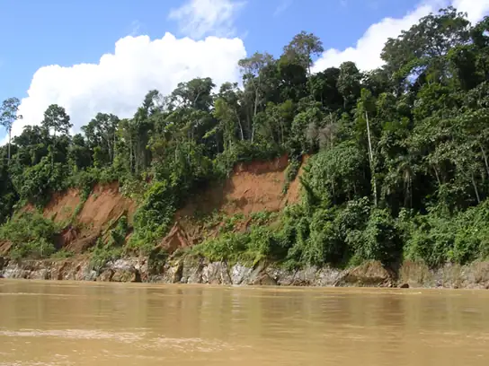
Savannas¶
Savannas are grasslands with scattered trees, and they are located in Africa, South America, and northern Australia (Figure 44.12). Savannas are usually hot, tropical areas with temperatures averaging from 24 °C to 29 °C (75 °F to 84 °F) and an annual rainfall of 10–40 cm (3.9–15.7 in). Savannas have an extensive dry season; for this reason, forest trees do not grow as well as they do in the tropical wet forest (or other forest biomes). As a result, within the grasses and forbs (herbaceous flowering plants) that dominate the savanna, there are relatively few trees (Figure 44.14). Since fire is an important source of disturbance in this biome, plants have evolved well-developed root systems that allow them to quickly resprout after a fire.
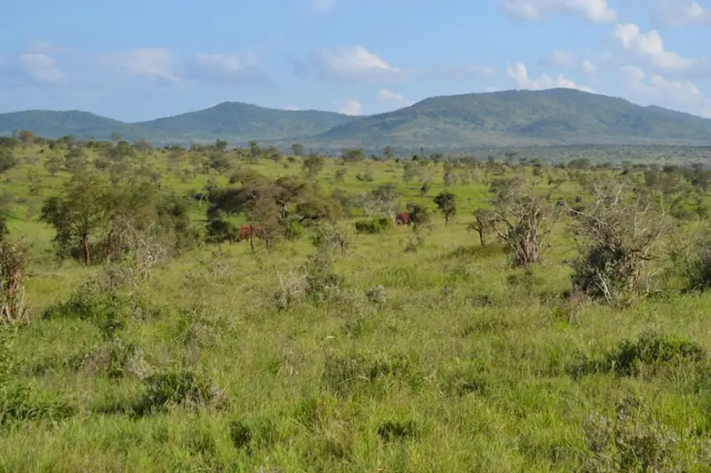
Subtropical Deserts¶
Subtropical deserts exist between 15° and 30° north and south latitude and are centered on the Tropics of Cancer and Capricorn (Figure 44.12). This biome is very dry; in some years, evaporation exceeds precipitation. Subtropical hot deserts can have daytime soil surface temperatures above 60 °C (140 °F) and nighttime temperatures approaching 0 °C (32 °F). This is largely due to the lack of atmospheric water. In cold deserts, temperatures can be as high as 25 °C and can drop below -30 °C (-22 °F). Subtropical deserts are characterized by low annual precipitation of fewer than 30 cm (12 in) with little monthly variation and lack of predictability in rainfall. In some cases, the annual rainfall can be as low as 2 cm (0.8 in) in subtropical deserts located in central Australia (“the Outback”) and northern Africa.
The vegetation and low animal diversity of this biome is closely related to low and unpredictable precipitation. Very dry deserts lack perennial vegetation that lives from one year to the next; instead, many plants are annuals that grow quickly and reproduce when rainfall does occur, and then die. Many other plants in these areas are characterized by having a number of adaptations that conserve water, such as deep roots, reduced foliage, and water-storing stems (Figure 44.15). Seed plants in the desert produce seeds that can be in dormancy for extended periods between rains. Adaptations in desert animals include nocturnal behavior and burrowing.
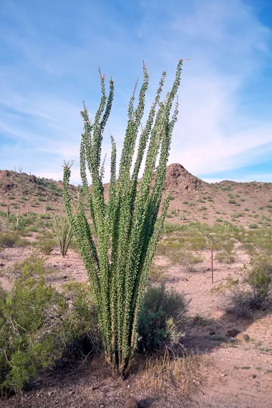
Chaparral¶
The chaparral is also called the scrub forest and is found in California, along the Mediterranean Sea, and along the southern coast of Australia (Figure 44.12). The annual rainfall in this biome ranges from 65 cm to 75 cm (25.6–29.5 in), and the majority of the rain falls in the winter. Summers are very dry and many chaparral plants are dormant during the summertime. The chaparral vegetation, shown in Figure 44.16, is dominated by shrubs adapted to periodic fires, with some plants producing seeds that only germinate after a hot fire. The ashes left behind after a fire are rich in nutrients like nitrogen that fertilize the soil and promote plant regrowth.
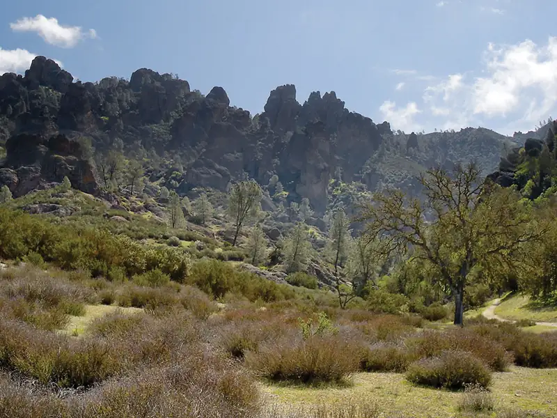
Temperate Grasslands¶
Temperate grasslands are found throughout central North America, where they are also known as prairies; they are also in Eurasia, where they are known as steppes (Figure 44.12). Temperate grasslands have pronounced annual fluctuations in temperature with hot summers and cold winters. The annual temperature variation produces specific growing seasons for plants. Plant growth is possible when temperatures are warm enough to sustain plant growth and when ample water is available, which occurs in the spring, summer, and fall. During much of the winter, temperatures are low, and water, which is stored in the form of ice, is not available for plant growth.
Annual precipitation ranges from 25 cm to 75 cm (9.8–29.5 in). Because of relatively lower annual precipitation in temperate grasslands, there are few trees except for those found growing along rivers or streams. The dominant vegetation tends to consist of grasses dense enough to sustain populations of grazing animals Figure 44.17. The vegetation is very dense and the soils are fertile because the subsurface of the soil is packed with the roots and rhizomes (underground stems) of these grasses. The roots and rhizomes act to anchor plants into the ground and replenish the organic material (humus) in the soil when they die and decay.
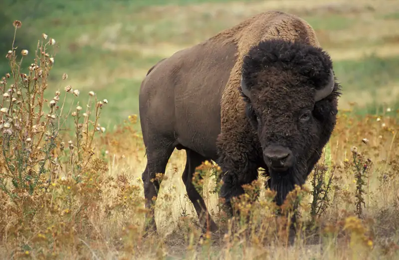
Fires, mainly caused by lightning, are a natural disturbance in temperate grasslands. When fire is suppressed in temperate grasslands, the vegetation eventually converts to scrub and sometimes dense forests with drought-tolerant tree species. Often, the restoration or management of temperate grasslands requires the use of controlled burns to suppress the growth of trees and maintain the grasses.
Temperate Forests¶
Temperate forests are the most common biome in eastern North America, Western Europe, Eastern Asia, Chile, and New Zealand (Figure 44.12). This biome is found throughout mid-latitude regions. Temperatures range between -30 °C and 30 °C (-22 °F to 86 °F) and drop to below freezing periodically during cold winters. These temperatures mean that temperate forests have defined growing seasons during the spring, summer, and early fall. Precipitation is relatively constant throughout the year and ranges between 75 cm and 150 cm (29.5–59 in).
Because of the moderate annual rainfall and temperatures, deciduous trees are the dominant plant in this biome (Figure 44.18). Deciduous trees lose their leaves each fall and remain leafless in the winter. Thus, no photosynthesis occurs in the deciduous trees during the dormant winter period. Each spring, new leaves appear as the temperature increases. Because of the dormant period, the net primary productivity of temperate forests is less than that of tropical wet forests. In addition, temperate forests show less diversity of tree species than tropical wet forest biomes.
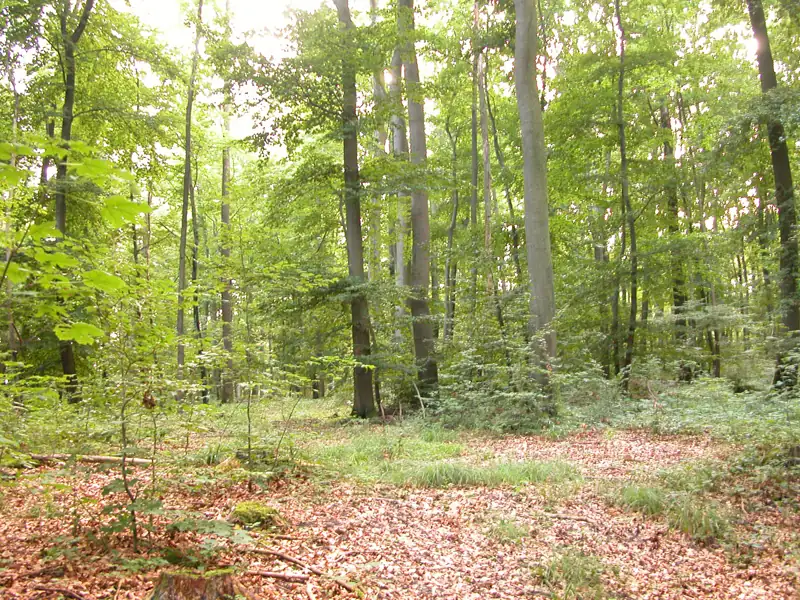
The trees of the temperate forests leaf out and shade much of the ground; however, this biome is more open than tropical wet forests because most trees in the temperate forests do not grow as tall as the trees in tropical wet forests. The soils of the temperate forests are rich in inorganic and organic nutrients. This is due to the thick layer of leaf litter on forest floors, which does not develop in tropical rainforests. As this leaf litter decays, nutrients are returned to the soil. The leaf litter also protects soil from erosion, insulates the ground, and provides habitats for invertebrates (such as the pill bug or roly-poly, Armadillidium vulgare) and their predators, such as the red-backed salamander (Plethodon cinereus).
Boreal Forests¶
The boreal forest, also known as taiga or coniferous forest, is found south of the Arctic Circle and across most of Canada, Alaska, Russia, and northern Europe (Figure 44.12). This biome has cold, dry winters and short, cool, wet summers. The annual precipitation is from 40 cm to 100 cm (15.7–39 in) and usually takes the form of snow. Little evaporation occurs because of the cold temperatures.
The long and cold winters in the boreal forest have led to the predominance of cold-tolerant cone-bearing (coniferous) plants. These are evergreen coniferous trees like pines, spruce, and fir, which retain their needle-shaped leaves year-round. Evergreen trees can photosynthesize earlier in the spring than deciduous trees because less energy from the sun is required to warm a needle-like leaf than a broad leaf. This benefits evergreen trees, which grow faster than deciduous trees in the boreal forest. In addition, soils in boreal forest regions tend to be acidic with little available nitrogen. Leaves are a nitrogen-rich structure and deciduous trees must produce a new set of these nitrogen-rich structures each year. Therefore, coniferous trees that retain nitrogen-rich needles may have a competitive advantage over the broad-leafed deciduous trees.
The net primary productivity of boreal forests is lower than that of temperate forests and tropical wet forests. The above-ground biomass of boreal forests is high because these slow-growing tree species are long-lived and accumulate a large standing biomass over time. Plant species diversity is less than that seen in temperate forests and tropical wet forests. Boreal forests lack the pronounced elements of the layered forest structure seen in tropical wet forests. The structure of a boreal forest is often only a tree layer and a ground layer (Figure 44.19). When conifer needles are dropped, they decompose more slowly than broad leaves; therefore, fewer nutrients are returned to the soil to fuel plant growth.
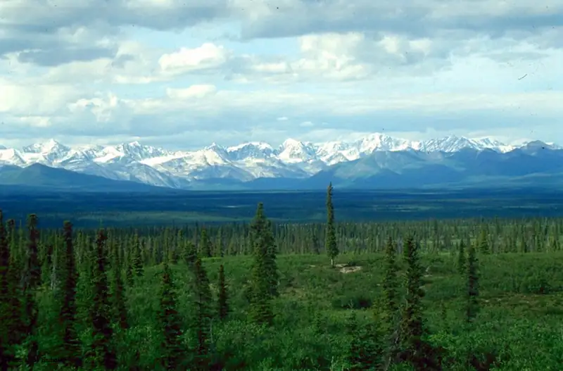
Arctic Tundra¶
The Arctic tundra lies north of the subarctic boreal forest and is located throughout the Arctic regions of the northern hemisphere (Figure 44.12). The average winter temperature is –34 °C (–29.2 °F) and the average summer temperature is from 3 °C to 12 °C (37 °F–52 °F). Plants in the arctic tundra have a very short growing season of approximately 10–12 weeks.
However, during this time, there are almost 24 hours of daylight and plant growth is rapid. The annual precipitation of the Arctic tundra is very low with little annual variation in precipitation. And, as in the boreal forests, there is little evaporation due to the cold temperatures.
Plants in the Arctic tundra are generally low to the ground (Figure 44.20). There is little species diversity, low net primary productivity, and low above-ground biomass. The soils of the Arctic tundra may remain in a perennially frozen state referred to as permafrost. The permafrost makes it impossible for roots to penetrate deep into the soil and slows the decay of organic matter, which inhibits the release of nutrients from organic matter. During the growing season, the ground of the Arctic tundra can be completely covered with plants or lichens.
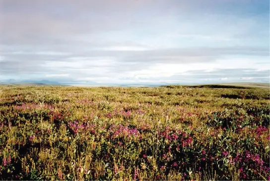
Interactive
Watch this Assignment Discovery: Biomes video for an overview of biomes. To explore further, select one of the biomes on the extended playlist: desert, savanna, temperate forest, temperate grassland, tropic, tundra.
44.4 Aquatic Biomes¶
Learning Objectives
By the end of this section, you will be able to do the following:
- Describe the effects of abiotic factors on the composition of plant and animal communities in aquatic biomes
- Compare and contrast the characteristics of the ocean zones
- Summarize the characteristics of standing water and flowing water freshwater biomes
Abiotic Factors Influencing Aquatic Biomes¶
Like terrestrial biomes, aquatic biomes are influenced by a series of abiotic factors. The aquatic medium—water— has different physical and chemical properties than air, however. Even if the water in a pond or other body of water is perfectly clear (there are no suspended particles), water, on its own, absorbs light. As one descends into a deep body of water, there will eventually be a depth which the sunlight cannot reach. While there are some abiotic and biotic factors in a terrestrial ecosystem that might obscure light (like fog, dust, or insect swarms), usually these are not permanent features of the environment. The importance of light in aquatic biomes is central to the communities of organisms found in both freshwater and marine ecosystems. In freshwater systems, stratification due to differences in density is perhaps the most critical abiotic factor and is related to the energy aspects of light. The thermal properties of water (rates of heating and cooling and the ability to store much larger amounts of energy than the air) are significant to the function of marine systems and have major impacts on global climate and weather patterns. Marine systems are also influenced by large-scale physical water movements, such as currents; these are less important in most freshwater lakes.
The ocean is categorized by several areas or zones (Figure 44.21). All of the ocean’s open water is referred to as the pelagic realm (or zone). The benthic realm (or zone) extends along the ocean bottom from the shoreline to the deepest parts of the ocean floor. Within the pelagic realm is the photic zone, which is the portion of the ocean that light can penetrate (approximately 200 m or 650 ft). At depths greater than 200 m, light cannot penetrate; thus, this is referred to as the aphotic zone. The majority of the ocean is aphotic and lacks sufficient light for photosynthesis. The deepest part of the ocean, the Challenger Deep (in the Mariana Trench, located in the western Pacific Ocean), is about 11,000 m (about 6.8 mi) deep. To give some perspective on the depth of this trench, the ocean is, on average, 4267 m or 14,000 ft deep. These realms and zones are relevant to freshwater lakes as well.
Visual Connection
![The illustration divides the ocean into different zones based on depth. The top layer, called the photic zone, extends from the surface to 200 m. The aphotic zone extends from 200 to 4,000 m. The abyssal zone extends from 4,000 m to the ocean bottom. The ocean is also divided into zones based on distance from the shore. The intertidal zone extends from high to low tide. The neritic zone extends from the intertidal zone to the point at which ocean depth is about 200 m. At about this depth, the continental shelf ends in a steep slope to the ocean bottom. The oceanic zone is the area of open ocean. The entire ocean bottom is the benthic zone. It extends from the shore, along the bottom of shallow water, and continues along the bottom down to the greatest ocean depths. All of the ocean's open water, above the entire benthic realm, including the photic, aphotic, and abyssal zones, is referred to as the pelagic realm.](img/figure-44-04-01.webp)
In which of the following regions would you expect to find photosynthetic organisms?
- the aphotic zone, the neritic zone, the oceanic zone, and the benthic realm
- the photic zone, the intertidal zone, the neritic zone, and the oceanic zone
- the photic zone, the abyssal zone, the neritic zone, and the oceanic zone
- the pelagic realm, the aphotic zone, the neritic zone, and the oceanic zone
Marine Biomes¶
The ocean is the largest marine biome. It is a continuous body of salt water that is relatively uniform in chemical composition; in fact, it is a weak solution of mineral salts and decayed biological matter. Within the ocean, coral reefs are a second kind of marine biome. Estuaries, coastal areas where salt water and fresh water mix, form a third unique marine biome.
Ocean¶
The physical diversity of the ocean is a significant influence on plants, animals, and other organisms. The ocean is categorized into different zones based on how far light reaches into the water. Each zone has a distinct group of species adapted to the biotic and abiotic conditions particular to that zone.
The intertidal zone, which is the zone between high and low tide, is the oceanic region that is closest to land (Figure 44.21). Generally, most people think of this portion of the ocean as a sandy beach. In some cases, the intertidal zone is indeed a sandy beach, but it can also be rocky or muddy. The intertidal zone is an extremely variable environment because of action of tidal ebb and flow. Organisms are exposed to air and sunlight at low tide and are underwater most of the time, especially during high tide. Therefore, living things that thrive in the intertidal zone are adapted to being dry for long periods of time. The shore of the intertidal zone may also be repeatedly struck by waves, and the organisms found there are adapted to withstand damage from their pounding action (Figure 44.22). The exoskeletons of shoreline crustaceans (such as the shore crab, Carcinus maenas) are tough and protect them from desiccation (drying out) and wave damage. Another consequence of the pounding waves is that few algae and plants establish themselves in the constantly moving rocks, sand, or mud.
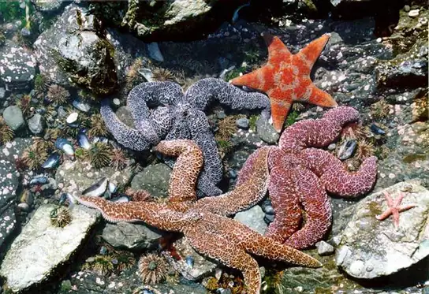
The neritic zone (Figure 44.21) extends from the intertidal zone to depths of about 200 m (or 650 ft) at the edge of the continental shelf (the underwater landmass that extends from a continent). Since light can penetrate this depth, photosynthesis can still occur in the neritic zone. The water here contains silt and is well-oxygenated, low in pressure, and stable in temperature. Phytoplankton and floating Sargassum (a type of free-floating marine seaweed) provide a habitat for some sea life found in the neritic zone. Zooplankton, protists, small fishes, and shrimp are found in the neritic zone and are the base of the food chain for most of the world’s fisheries.
Beyond the neritic zone is the open ocean area known as the pelagic or open oceanic zone (Figure 44.21). Within the oceanic zone there is thermal stratification where warm and cold waters mix because of ocean currents. Abundant plankton serve as the base of the food chain for larger animals such as whales and dolphins. Nutrients are scarce and this is a relatively less productive part of the marine biome. When photosynthetic organisms and the protists and animals that feed on them die, their bodies fall to the bottom of the ocean, where they remain. Unlike freshwater lakes, most of the open ocean lacks a process for bringing the organic nutrients back up to the surface. (Exceptions include major oceanic upwellings within the Humboldt Current along the western coast of South America.) The majority of organisms in the aphotic zone include sea cucumbers (phylum Echinodermata) and other organisms that survive on the nutrients contained in the dead bodies of organisms in the photic zone.
Beneath the pelagic zone is the benthic realm, the water region beyond the continental shelf that starts at the shoreline and extends to the deepest regions of the ocean (Figure 44.21). The bottom of the benthic realm is composed of sand, silt, and dead organisms. Temperature decreases, remaining above freezing, as water depth increases. This is a nutrient-rich portion of the ocean because of the dead organisms that fall from the upper layers of the ocean. Because of this high level of nutrients, a diversity of fungi, sponges, sea anemones, marine worms, sea stars, fishes, and bacteria exist.
The deepest part of the ocean is the abyssal zone, which is at depths of 4000 m or greater. The abyssal zone (Figure 44.21) is very cold and has very high pressure, very low or no oxygen content, and high nutrient content as the dead and decomposing material drifts down from the layers above. There are a variety of invertebrates and fishes found in this zone, but the abyssal zone does not have plants because of the lack of light. Hydrothermal vents are found primarily in the abyssal zone; chemosynthetic bacteria utilize the hydrogen sulfide and other minerals emitted from the vents to produce biomass. These chemosynthetic bacteria use various molecules as an energy source and serve as the base of the food chain found in the abyssal zone.
Coral Reefs¶
Coral reefs are ocean ridges formed by marine invertebrates, comprising mostly cnidarians and mollusks, living in warm shallow waters within the photic zone of the ocean. They are found within 30˚ north and south of the equator. The Great Barrier Reef is perhaps the best-known and largest reef system in the world—visible from the International Space Station! This massive and ancient reef is located several miles off the northeastern coast of Australia. Other coral reef systems are fringing islands, which are directly adjacent to land, or atolls, which are circular reef systems surrounding a former landmass that is now underwater. The coral organisms (members of phylum Cnidaria) are colonies of saltwater polyps that secrete a calcium carbonate skeleton. These calcium-rich skeletons slowly accumulate, forming the underwater reef (Figure 44.23). Corals found in shallower waters (at a depth of approximately 60 m or about 200 ft) have a mutualistic relationship with photosynthetic unicellular algae. The relationship provides corals with the majority of the nutrition and the energy they require. The waters in which these corals live are nutritionally poor and, without this mutualism, it would not be possible for large corals to grow. Some corals living in deeper and colder water do not have a mutualistic relationship with algae; these corals attain energy and nutrients using stinging cells called cnidocytes on their tentacles to capture prey.
Interactive
Watch this National Oceanic and Atmospheric Administration (NOAA) video to see marine ecologist Dr. Peter Etnoyer discuss his research on coral organisms.
It is estimated that more than 4,000 fish species inhabit coral reefs. These fishes can feed on coral, the cryptofauna (invertebrates found within the calcium carbonate substrate of the coral reefs), or the seaweed and algae that are associated with the coral. In addition, some fish species inhabit the boundaries of a coral reef; these species include predators, herbivores, and planktivores, which consume planktonic organisms such as bacteria, archaea, algae, and protists floating in the pelagic zone.
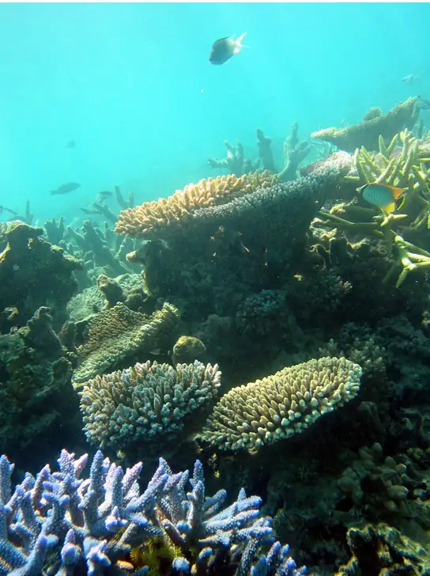
Evolution Connection: Global Decline of Coral Reefs
It takes many thousands of years to build a coral reef. The animals that create coral reefs have evolved over millions of years, continuing to slowly deposit the calcium carbonate that forms their characteristic ocean homes. Bathed in warm tropical waters, the coral animals and their symbiotic algal partners evolved to survive at the upper limit of ocean water temperature.
Together, climate change and human activity pose dual threats to the long-term survival of the world’s coral reefs. As global warming due to fossil fuel emissions raises ocean temperatures, coral reefs are suffering. The excessive warmth causes the reefs to lose their symbiotic, food-producing algae, resulting in a phenomenon known as bleaching. When bleaching occurs, the reefs lose much of their characteristic color as the algae and the coral animals die if loss of the symbiotic zooxanthellae is prolonged.
Rising levels of atmospheric carbon dioxide further threaten the corals in other ways; as CO2 dissolves in ocean waters, it lowers the pH and increases ocean acidity. As acidity increases, it interferes with the calcification that normally occurs when coral animals build their calcium carbonate shelters.
When a coral reef begins to die, species diversity plummets as animals lose food and shelter. Coral reefs are also economically important tourist destinations, so the decline of coral reefs poses a serious threat to coastal economies.
Human population growth has damaged corals in other ways, too. As human coastal populations increase, the runoff of sediment and agricultural chemicals has increased, as well, causing some of the once-clear tropical waters to become cloudy. At the same time, overfishing of popular fish species has allowed the predator species that eat corals to go unchecked.
Although a rise in global temperatures of 1–2 ˚C (a conservative scientific projection) in the coming decades may not seem large, it is very significant to this biome. When change occurs rapidly, species can become extinct before evolution can offer new adaptations. Many scientists believe that global warming, with its rapid (in terms of evolutionary time) and inexorable increases in temperature, is tipping the balance beyond the point at which many of the world’s coral reefs can recover.
Estuaries: Where the Ocean Meets Fresh Water¶
Estuaries are biomes that occur where a source of fresh water, such as a river, meets the ocean. Therefore, both fresh water and salt water are found in the same vicinity; mixing results in a diluted (brackish) saltwater. Estuaries form protected areas where many of the young offspring of crustaceans, mollusks, and fish begin their lives, which also creates important breeding grounds for other animals. Salinity is a very important factor that influences the organisms and the adaptations of the organisms found in estuaries. The salinity of estuaries varies considerably and is based on the rate of flow of its freshwater sources, which may depend on the seasonal rainfall. Once or twice a day, high tides bring salt water into the estuary. Low tides occurring at the same frequency reverse the current of salt water.
The short-term and rapid variation in salinity due to the mixing of fresh water and salt water is a difficult physiological challenge for the plants and animals that inhabit estuaries. Many estuarine plant species are halophytes: plants that can tolerate salty conditions. Halophytic plants are adapted to deal with the salinity resulting from saltwater on their roots or from sea spray. In some halophytes, filters in the roots remove the salt from the water that the plant absorbs. Other plants are able to pump oxygen into their roots. Animals, such as mussels and clams (phylum Mollusca), have developed behavioral adaptations that expend a lot of energy to function in this rapidly changing environment. When these animals are exposed to low salinity, they stop feeding, close their shells, and switch from aerobic respiration (in which they use gills to remove oxygen from the water) to anaerobic respiration (a process that does not require oxygen and takes place in the cytoplasm of the animal’s cells). When high tide returns to the estuary, the salinity and oxygen content of the water increases, and these animals open their shells, begin feeding, and return to aerobic respiration.
Freshwater Biomes¶
Freshwater biomes include lakes and ponds (standing water) as well as rivers and streams (flowing water). They also include wetlands, which will be discussed later. Humans rely on freshwater biomes to provide ecosystem benefits, which are aquatic resources for drinking water, crop irrigation, sanitation, and industry. Lakes and ponds are connected with abiotic and biotic factors influencing their terrestrial biomes.
Lakes and Ponds¶
Lakes and ponds can range in area from a few square meters to thousands of square kilometers. Temperature is an important abiotic factor affecting living things found in lakes and ponds. In the summer, as we have seen, thermal stratification of lakes and ponds occurs when the upper layer of water is warmed by the sun and does not mix with deeper, cooler water. Light can penetrate within the photic zone of the lake or pond. Phytoplankton (algae and cyanobacteria) are found here and carry out photosynthesis, providing the base of the food web of lakes and ponds. Zooplankton, such as rotifers and larvae and adult crustaceans, consume these phytoplankton. At the bottom of lakes and ponds, bacteria in the aphotic zone break down dead organisms that sink to the bottom.
Nitrogen and phosphorus are important limiting nutrients in lakes and ponds. Because of this, they are the determining factors in the amount of phytoplankton growth that takes place in lakes and ponds. When there is a large input of nitrogen and phosphorus (from sewage and runoff from fertilized lawns and farms, for example), the growth of algae skyrockets, resulting in a large accumulation of algae called an algal bloom. Algal blooms (Figure 44.24) can become so extensive that they reduce light penetration in water. They may also release toxic byproducts into the water, contaminating any drinking water taken from that source. In addition, the lake or pond becomes aphotic, and photosynthetic plants cannot survive. When the algae die and decompose, severe oxygen depletion of the water occurs. Fishes and other organisms that require oxygen are then more likely to die, resulting in a dead zone. Lake Erie and the Gulf of Mexico represent freshwater and marine habitats where phosphorus control and storm water runoff pose significant environmental challenges.
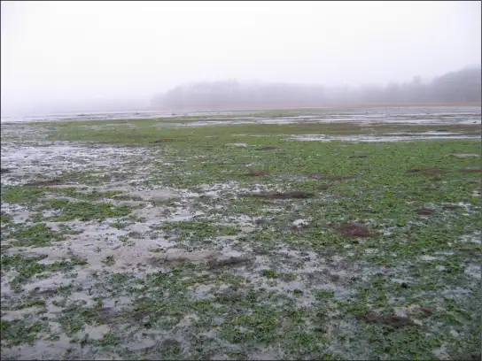
Rivers and Streams¶
Rivers and streams are continuously moving bodies of water that carry large amounts of water from the source, or headwater, to a lake or ocean. The largest rivers include the Nile River in Africa, the Amazon River in South America, and the Mississippi River in North America.
Abiotic features of rivers and streams vary along the length of the river or stream. Streams begin at a point of origin referred to as source water. The source water is usually cold, low in nutrients, and clear. The channel (the width of the river or stream) is narrower than at any other place along the length of the river or stream. Because of this, the current is often faster here than at any other point of the river or stream.
The fast-moving water results in minimal silt accumulation at the bottom of the river or stream; therefore, the water is usually clear and free of debris. Photosynthesis here is mostly attributed to algae that are growing on rocks; the swift current inhibits the growth of phytoplankton. An additional input of energy can come from leaves and other organic material that fall downstream into the river or stream, as well as from trees and other plants that border the water. When the leaves decompose, the organic material and nutrients in the leaves are returned to the water. Plants and animals have adapted to this fast-moving water. For instance, some species of mayfly (phylum Arthropoda) have flattened bodies and legs with modified claws to help them cling to the underside of submerged rocks. This body form reduces drag and allows these species to benefit from the high oxygen concentrations in fast-moving currents without being dislodged. Freshwater trout species (phylum Chordata) are an important predator in these fast-moving rivers and streams.
As the river or stream flows away from the source, the width of the channel gradually widens and the current slows. This slow-moving water, caused by the gradient decrease and the volume increase as tributaries unite, has more sedimentation. Phytoplankton can also be suspended in slow-moving water. Therefore, the water will not be as clear as it is near the source. The water is also warmer. Worms (phylum Annelida) and insects (phylum Arthropoda) can be found burrowing into the mud. The higher order predator vertebrates (phylum Chordata) include waterfowl, frogs, and fishes. These predators must find food in these slow moving, sometimes murky, waters and, unlike the trout in the waters at the source, these vertebrates may not be able to use vision as their primary sense to find food. Instead, they are more likely to use taste or chemical cues to find prey.
Wetlands¶
Wetlands are environments in which the soil is either permanently or periodically saturated with water. Wetlands are different from lakes because wetlands are shallow bodies of water whereas lakes vary in depth. Emergent vegetation consists of wetland plants that are rooted in the soil but have portions of leaves, stems, and flowers extending above the water’s surface. There are several types of wetlands including marshes, swamps, bogs, mudflats, and salt marshes (Figure 44.25). The three shared characteristics among these types—what makes them wetlands—are their hydrology, hydrophytic vegetation, and hydric soils.
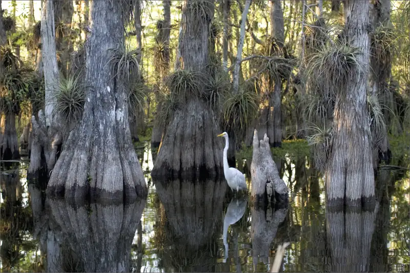
Freshwater marshes and swamps are characterized by slow and steady water flow. Bogs, however, develop in depressions where water flow is low or nonexistent. Bogs usually occur in areas where there is a clay bottom with poor percolation of water. (Percolation is the movement of water through the pores in the soil or rocks.) The water found in a bog is stagnant and oxygen-depleted because the oxygen used during the decomposition of organic matter is not readily replaced. As the oxygen in the water is depleted, decomposition slows. This leads to a buildup of acids and a lower water pH. The lower pH creates challenges for plants because it limits the available nitrogen. As a result, some bog plants (such as sundews, pitcher plants, and Venus flytraps) capture insects in order to extract the nitrogen from their bodies. Bogs have low net primary productivity because the water found in bogs has low levels of nitrogen and oxygen.
44.5 Climate and the Effects of Global Climate Change¶
Learning Objectives
By the end of this section, you will be able to do the following:
- Define global climate change
- Summarize the effects of the Industrial Revolution on global atmospheric carbon dioxide concentration
- Describe three natural factors affecting long-term global climate
- List two or more greenhouse gases and describe their role in the greenhouse effect
All biomes are universally affected by global conditions, such as climate, that ultimately shape each biome’s environment. Scientists who study climate have noted a series of marked changes that have gradually become increasingly evident during the last sixty years. Global climate change is the term used to describe altered global weather patterns, especially a worldwide increase in temperature and resulting changes in the climate, due largely to rising levels of atmospheric carbon dioxide.
Climate and Weather¶
A common misconception about global climate change is that a specific weather event occurring in a particular region (for example, a very cool week in June in central Indiana) provides evidence of global climate change. However, a cold week in June is a weather-related event and not a climate-related one. These misconceptions often arise because of confusion over the terms climate and weather.
Climate refers to the long-term, predictable atmospheric conditions of a specific area. The climate of a biome is characterized by having consistent seasonal temperature and rainfall ranges. Climate does not address the amount of rain that fell on one particular day in a biome or the colder-than-average temperatures that occurred on one day. In contrast, weather refers to the conditions of the atmosphere during a short period of time. Weather forecasts are usually made for 48-hour cycles. Long-range weather forecasts are available but can be unreliable.
To better understand the difference between climate and weather, imagine that you are planning an outdoor event in northern Wisconsin. You would be thinking about climate when you plan the event in the summer rather than the winter because you have long-term knowledge that any given Saturday in the months of May to August would be a better choice for an outdoor event in Wisconsin than any given Saturday in January. However, you cannot determine the specific day that the event should be held on because it is difficult to accurately predict the weather on a specific day. Climate can be considered “average” weather that takes place over many years.
Global Climate Change¶
Climate change can be understood by approaching three areas of study:
- evidence of current and past global climate change
- drivers of global climate change
- documented results of climate change
It is helpful to keep these three different aspects of climate change clearly separated when consuming media reports about global climate change. We should note that it is common for reports and discussions about global climate change to confuse the data showing that Earth’s climate is changing with the factors that drive this climate change.
Evidence for Global Climate Change¶
Since scientists cannot go back in time to directly measure climatic variables, such as average temperature and precipitation, they must instead indirectly measure temperature. To do this, scientists rely on historical evidence of Earth’s past climate.
Antarctic ice cores are a key example of such evidence for climate change. These ice cores are samples of polar ice obtained by means of drills that reach thousands of meters into ice sheets or high mountain glaciers. Viewing the ice cores is like traveling backwards through time; the deeper the sample, the earlier the time period. Trapped within the ice are air bubbles and other biological evidence that can reveal temperature and carbon dioxide data. Antarctic ice cores have been collected and analyzed to indirectly estimate the temperature of the Earth over the past 400,000 years (Figure 44.26a). The data represented in Figure 44.27 is an example of such analyses. The 0 °C on this graph refers to the long-term average. Temperatures that are greater than 0 °C exceed Earth’s long-term average temperature. Conversely, temperatures that are less than 0 °C are less than Earth’s average temperature. This figure shows that there have been periodic cycles of increasing and decreasing temperature.
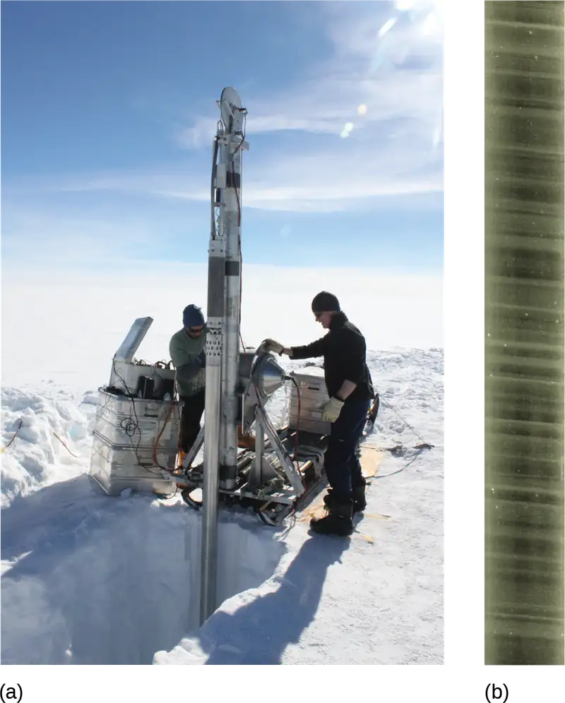
Before the late 1800s, the Earth has been as much as 9 °C cooler and about 3 °C warmer. Note that the graph in Figure 44.27b shows that the atmospheric concentration of carbon dioxide has also risen and fallen in periodic cycles. Also note the relationship between carbon dioxide concentration and temperature. Figure 44.27b shows that carbon dioxide levels in the atmosphere have historically cycled between 180 and 300 parts per million (ppm) by volume.
![Top graph plots temperature change in degrees Celsius versus years before present, beginning 400,000 years ago. Temperature shows a cyclical variation, from about 2 degrees Celsius above todays average temperature, to about 8 degrees below. Carbon dioxide levels also show a cyclical variation. The graph shows that the current trend is the carbon dioxide levels are rising. In the past, it cycled between 180 and 300 parts per million. The temperature and carbon dioxide cycles, which repeat at about a hundred thousand year scale, closely mirror one another.](img/figure-44-05-01.webp)
Figure 44.27a does not show the last 2,000 years with enough detail to compare the changes of Earth’s temperature during the last 400,000 years with the temperature change that has occurred in the more recent past. Two significant temperature anomalies, or irregularities, have occurred in the last 2,000 years. These are the Medieval Climate Anomaly (or the Medieval Warm Period) and the Little Ice Age. A third temperature anomaly aligns with the Industrial Era. The Medieval Climate Anomaly occurred between 900 and 1300 AD. During this time period, many climate scientists think that slightly warmer weather conditions prevailed in many parts of the world; the higher-than-average temperature changes varied between 0.10 °C and 0.20 °C above the norm. Although 0.10 °C does not seem large enough to produce any noticeable change, it did free seas of ice. Because of this warming, the Vikings were able to colonize Greenland.
The Little Ice Age was a cold period that occurred between 1550 AD and 1850 AD. During this time, a slight cooling of a little less than 1 °C was observed in North America, Europe, and possibly other areas of the Earth. This 1 °C change in global temperature is a seemingly small deviation in temperature (as was observed during the Medieval Climate Anomaly); however, it also resulted in noticeable climatic changes. Historical accounts reveal a time of exceptionally harsh winters with much snow and frost.
The Industrial Revolution, which began around 1750, was characterized by changes in much of human society. Advances in agriculture increased the food supply, which improved the standard of living for people in Europe and the United States. New technologies were invented that provided jobs and cheaper goods. These new technologies were powered using fossil fuels, especially coal. The Industrial Revolution starting in the early nineteenth century ushered in the beginning of the Industrial Era. When a fossil fuel is burned, carbon dioxide is released. With the beginning of the Industrial Era, atmospheric carbon dioxide began to rise (Figure 44.28).
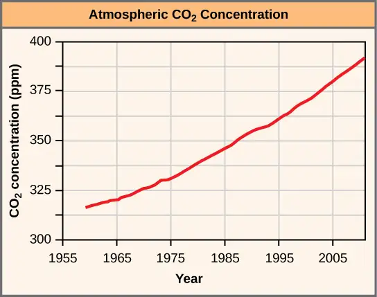
Current and Past Drivers of Global Climate Change¶
Because it is not possible to go back in time to directly observe and measure climate, scientists must use indirect evidence to determine the drivers, or factors, that may be responsible for climate change. The indirect evidence includes data collected using ice cores, boreholes (a narrow shaft bored into the ground), tree rings, glacier lengths, pollen remains, and ocean sediments. The data shows a correlation between the timing of temperature changes and drivers of climate change. Before the Industrial Era (pre-1780), there were three drivers of climate change that were not related to human activity or atmospheric gases. The first of these is the Milankovitch cycles. The Milankovitch cycles describe the effects of slight changes in the Earth’s orbit on Earth’s climate. The length of the Milankovitch cycles ranges between 19,000 and 100,000 years. In other words, one could expect to see some predictable changes in the Earth’s climate associated with changes in the Earth’s orbit at a minimum of every 19,000 years.
The variation in the sun’s intensity is the second natural factor responsible for climate change. Solar intensity is the amount of solar power or energy the sun emits in a given amount of time. There is a direct relationship between solar intensity and temperature. As solar intensity increases (or decreases), the Earth’s temperature correspondingly increases (or decreases). Changes in solar intensity have been proposed as one of several possible explanations for the Little Ice Age.
Finally, volcanic eruptions are a third natural driver of climate change. Volcanic eruptions can last a few days, but the solids and gases released during an eruption can influence the climate over a period of a few years, causing short-term climate changes. The gases and solids released by volcanic eruptions can include carbon dioxide, water vapor, sulfur dioxide, hydrogen sulfide, hydrogen, and carbon monoxide. Generally, volcanic eruptions cool the climate. This occurred in 1783 when volcanoes in Iceland erupted and caused the release of large volumes of sulfuric oxide. This led to haze-effect cooling, a global phenomenon that occurs when dust, ash, or other suspended particles block out sunlight and trigger lower global temperatures as a result; haze-effect cooling usually extends for one or more years before dissipating in intensity. In Europe and North America, haze-effect cooling produced some of the lowest average winter temperatures on record in 1783 and 1784.
Greenhouse gases are probably the most significant drivers of the climate. When heat energy from the sun strikes the Earth, gases known as greenhouse gases trap the heat in the atmosphere, in a similar manner as do the glass panes of a greenhouse keep heat from escaping. The greenhouse gases that affect Earth include carbon dioxide, methane, water vapor, nitrous oxide, and ozone. Approximately half of the radiation from the sun passes through these gases in the atmosphere and strikes the Earth. This radiation is converted into thermal (infrared) radiation on the Earth’s surface, and then a portion of that energy is re-radiated back into the atmosphere. Greenhouse gases, however, reflect much of the thermal energy back to the Earth’s surface. The more greenhouse gases there are in the atmosphere, the more thermal energy is reflected back to the Earth’s surface, heating it up and the atmosphere immediately above it. Greenhouse gases absorb and emit radiation and are an important factor in the greenhouse effect: the warming of Earth due to carbon dioxide and other greenhouse gases in the atmosphere.
Direct evidence supports the relationship between atmospheric concentrations of carbon dioxide and temperature: as carbon dioxide rises, global temperature rises. Since 1950, the concentration of atmospheric carbon dioxide has increased from about 280 ppm to 382 ppm in 2006. In 2011, the atmospheric carbon dioxide concentration was 392 ppm. However, the planet would not be inhabitable by current life forms if water vapor did not produce its drastic greenhouse warming effect.
Scientists look at patterns in data and try to explain differences or deviations from these patterns. The atmospheric carbon dioxide data reveal a historical pattern of carbon dioxide increasing and decreasing, cycling between a low of 180 ppm and a high of 300 ppm. Scientists have concluded that it took around 50,000 years for the atmospheric carbon dioxide level to increase from its low minimum concentration to its higher maximum concentration. However, beginning only a few centuries ago, atmospheric carbon dioxide concentrations have increased beyond the historical maximum of 300 ppm. The current increases in atmospheric carbon dioxide have happened very quickly—in a matter of hundreds of years rather than thousands of years. What is the reason for this difference in the rate of change and the amount of increase in carbon dioxide? A key factor that must be recognized when comparing the historical data and the current data is the presence and industrial activities of modern human society; no other driver of climate change has yielded changes in atmospheric carbon dioxide levels at this rate or to this magnitude.
Human activity releases carbon dioxide and methane, two of the most important greenhouse gases, into the atmosphere in several ways. The primary mechanism that releases carbon dioxide is the burning of fossil fuels, such as gasoline, coal, and natural gas (Figure 44.29). Deforestation, cement manufacture, animal agriculture, the clearing of land, and the burning of forests are other human activities that release carbon dioxide. Methane (CH4) is produced when bacteria break down organic matter under anaerobic conditions. Anaerobic conditions can happen when organic matter is trapped underwater (such as in rice paddies) or in the intestines of herbivores. Methane can also be released from natural gas fields and the decomposition of animal and plant material that occurs in landfills. Another source of methane is the melting of clathrates. Clathrates are frozen chunks of ice and methane found at the bottom of the ocean. When water warms, these chunks of ice melt and methane is released. As the ocean’s water temperature increases, the rate at which clathrates melt is increasing, releasing even more methane. This leads to increased levels of methane in the atmosphere, which further accelerates the rate of global warming. This is an example of the positive feedback loop that is leading to the rapid rate of increase of global temperatures.
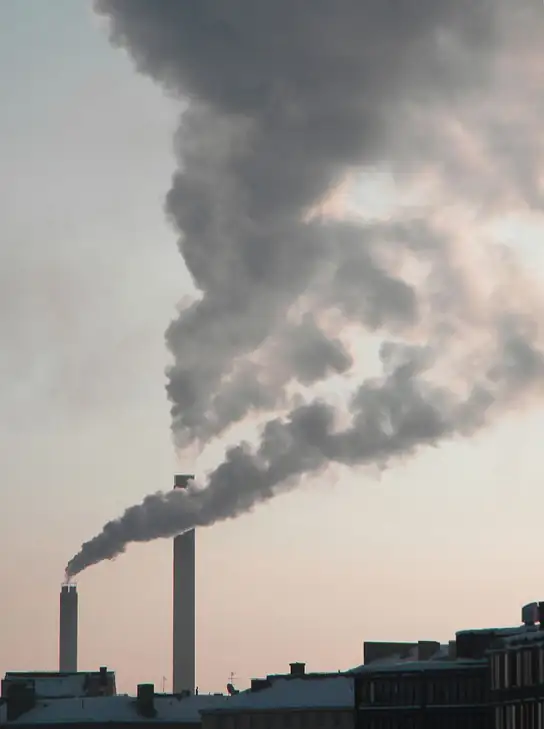
Documented Results of Climate Change: Past and Present¶
Scientists have geological evidence of the consequences of long-ago climate change. Modern-day phenomena such as retreating glaciers and melting polar ice cause a continual rise in sea level. Meanwhile, changes in climate can negatively affect organisms.
Geological Climate Change¶
Global warming has been associated with at least one planet-wide extinction event during the geological past. The Permian extinction event occurred about 251 million years ago toward the end of the roughly 50-million-year-long geological time span known as the Permian period. This geologic time period was one of the three warmest periods in Earth’s geologic history. Scientists estimate that approximately 70 percent of the terrestrial plant and animal species and 84 percent of marine species became extinct, vanishing forever near the end of the Permian period.
Organisms that had adapted to wet and warm climatic conditions, such as annual rainfall of 300–400 cm (118–157 in) and 20 °C–30 °C (68 °F–86 °F) in the tropical wet forest, may not have been able to survive the Permian climate change.
Interactive
Watch this NASA video to discover the mixed effects of global warming on plant growth. While scientists found that warmer temperatures in the 1980s and 1990s caused an increase in plant productivity, this advantage has since been counteracted by more frequent droughts.
Present Climate Change¶
A number of global events have occurred that may be attributed to climate change during our lifetimes. Glacier National Park in Montana is undergoing the retreat of many of its glaciers, a phenomenon known as glacier recession. In 1850, the area contained approximately 150 glaciers. By 2010, however, the park contained only about 24 glaciers greater than 25 acres in size. One of these glaciers is the Grinnell Glacier (Figure 44.30) at Mount Gould. Between 1966 and 2005, the size of Grinnell Glacier shrank by 40 percent. Similarly, the mass of the ice sheets in Greenland and the Antarctic is decreasing: Greenland lost 150–250 km3 of ice per year between 2002 and 2006. In addition, the size and thickness of the Arctic sea ice is decreasing.
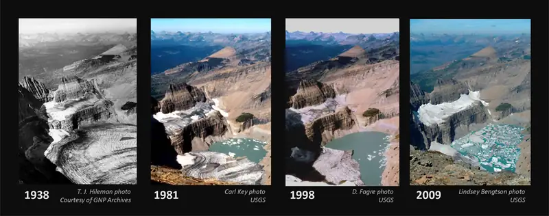
This loss of ice is leading to increases in the global sea level. On average, the sea is rising at a rate of 1.8 mm per year. However, between 1993 and 2010 the rate of sea level increase ranged between 2.9 and 3.4 mm per year. A variety of factors affect the volume of water in the ocean, especially the temperature of the water (the density of water is related to its temperature: water volume expands as it warms, thus raising sea levels), as well as the amount of water found in rivers, lakes, glaciers, polar ice caps, and sea ice. As glaciers and polar ice caps melt, there is a significant contribution of liquid water that was previously frozen.
In addition to some abiotic conditions changing in response to climate change, many organisms are also being affected by the changes in temperature. Temperature and precipitation play key roles in determining the geographic distribution and phenology of plants and animals. (Phenology is the study of the effects of climatic conditions on the timing of periodic life cycle events, such as flowering in plants or migration in birds.) Researchers have shown that 385 plant species in Great Britain are flowering 4.5 days sooner than was recorded earlier during the previous 40 years. In addition, insect-pollinated species were more likely to flower earlier than wind-pollinated species. The impact of changes in flowering date would be mitigated if the insect pollinators emerged earlier. This mismatched timing of plants and pollinators could result in injurious ecosystem effects because, for continued survival, insect-pollinated plants must flower when their pollinators are present.
Chapter Review¶
Key Terms¶
- abiotic
- nonliving components of the environment
- above-ground biomass
- total mass of aboveground living plants per area
- abyssal zone
- deepest part of the ocean at depths of 4000 m or greater
- algal bloom
- rapid increase of algae in an aquatic system
- aphotic zone
- part of the ocean where no light penetrates
- benthic realm
- (also, benthic zone) part of the ocean that extends along the ocean bottom from the shoreline to the deepest parts of the ocean floor
- biogeography
- study of the geographic distribution of living things and the abiotic factors that affect their distribution
- biome
- ecological community of plants, animals, and other organisms that is adapted to a characteristic set of environmental conditions
- biotic
- living components of the environment
- canopy
- branches and foliage of trees that form a layer of overhead coverage in a forest
- channel
- width of a river or stream from one bank to the other bank
- clathrates
- frozen chunks of ice and methane found at the bottom of the ocean
- climate
- long-term, predictable atmospheric conditions present in a specific area
- conspecifics
- individuals that are members of the same species
- coral reef
- ocean ridges formed by marine invertebrates living in warm, shallow waters within the photic zone
- cryptofauna
- invertebrates found within the calcium carbonate substrate of coral reefs
- ecology
- study of interaction between living things and their environment
- ecosystem services
- human benefits and services provided by natural ecosystems
- emergent vegetation
- wetland plants that are rooted in the soil but have portions of leaves, stems, and flowers extending above the water’s surface
- endemic
- species found only in a specific geographic area that is usually restricted in size
- estuary
- biomes where a source of fresh water, such as a river, meets the ocean
- fall and spring turnover
- seasonal process that recycles nutrients and oxygen from the bottom of a freshwater ecosystem to the top
- global climate change
- altered global weather patterns, including a worldwide increase in temperature, due largely to rising levels of atmospheric carbon dioxide
- greenhouse effect
- warming of Earth due to carbon dioxide and other greenhouse gases in the atmosphere
- greenhouse gases
- atmospheric gases such as carbon dioxide and methane that absorb and emit radiation, thus trapping heat in Earth’s atmosphere
- haze-effect cooling
- effect of the gases and solids from a volcanic eruption on global climate
- heterospecifics
- individuals that are members of different species
- intertidal zone
- part of the ocean that is closest to land; parts extend above the water at low tide
- Milankovitch cycles
- cyclic changes in the Earth's orbit that may affect climate
- neritic zone
- part of the ocean that extends from low tide to the edge of the continental shelf
- net primary productivity
- measurement of the energy accumulation within an ecosystem, calculated as the total amount of carbon fixed per year minus the amount that is oxidized during cellular respiration
- ocean upwelling
- rising of deep ocean waters that occurs when prevailing winds blow along surface waters near a coastline
- oceanic zone
- part of the ocean that begins offshore where the water measures 200 m deep or deeper
- pelagic realm
- (also, pelagic zone) open ocean waters that are not close to the bottom or near the shore
- permafrost
- perennially frozen portion of the Arctic tundra soil
- photic zone
- portion of the ocean that light can penetrate
- planktivore
- animal species that eats plankton
- predator
- organism that kills and consumes another organism
- Sargassum
- type of free-floating marine seaweed
- solar intensity
- amount of solar power energy the sun emits in a given amount of time
- source water
- point of origin of a river or stream
- thermocline
- layer of water with a temperature that is significantly different from that of the surrounding layers
- weather
- conditions of the atmosphere during a short period of time
Summary¶
44.1 The Scope of Ecology¶
Ecology is the study of the interactions of living things with their environment. Ecologists ask questions that comprise four levels of general biological organization—organismal, population, community, and ecosystem. At the organismal level, ecologists study individual organisms and how they interact with their environments. At the population and community levels, ecologists explore, respectively, how a population of organisms changes over time and the ways in which that population interacts with other species in the community. Ecologists studying an ecosystem examine the living species (the biotic components) of the ecosystem as well as the nonliving portions (the abiotic components), such as air, water, and soil, of the environment.
44.2 Biogeography¶
Biogeography is the study of the geographic distribution of living things as well as the abiotic factors that affect their distribution. Endemic species are species that are naturally found only in a specific geographic area. The distribution of living things is influenced by several environmental factors that are, in part, controlled by the latitude or elevation at which a species is found. Ocean upwellings, and spring and fall turnovers are important processes regulating the distribution of nutrients and other abiotic factors important in aquatic ecosystems. Energy sources, temperature, water, inorganic nutrients, and soil are factors limiting the distribution of living things in terrestrial systems. Net primary productivity is a measure of the amount of biomass produced by a biome.
44.3 Terrestrial Biomes¶
The Earth has terrestrial biomes and aquatic biomes. Aquatic biomes include both freshwater and marine environments. There are eight major terrestrial biomes: tropical wet forests, savannas, subtropical deserts, chaparral, temperate grasslands, temperate forests, boreal forests, and Arctic tundra. The same biome can occur in different geographic locations with similar climates. Temperature and precipitation, and variations in both, are key abiotic factors that shape the composition of animal and plant communities in terrestrial biomes. Some biomes, such as temperate grasslands and temperate forests, have distinct seasons, with cold weather and hot weather alternating throughout the year. In warm, moist biomes, such as the tropical wet forest, net primary productivity is high, as warm temperatures, abundant water, and a year-round growing season fuel plant growth and supply energy for high diversity throughout the food web. Other biomes, such as deserts and tundras, have low primary productivity due to extreme temperatures and a shortage of available water.
44.4 Aquatic Biomes¶
Aquatic ecosystems include both saltwater and freshwater biomes. The abiotic factors important for the structuring of aquatic ecosystems can be different than those seen in terrestrial systems. Sunlight is a driving force behind the structure of forests and also is an important factor in bodies of water, especially those that are very deep, because of the role of photosynthesis in sustaining certain organisms.
Density and temperature shape the structure of aquatic systems. Oceans may be thought of as consisting of different zones based on water depth and distance from the shoreline and light penetrance. Different kinds of organisms are adapted to the conditions found in each zone. Coral reefs are unique marine ecosystems that are home to a wide variety of species. Estuaries are found where rivers meet the ocean; their shallow waters provide nourishment and shelter for young crustaceans, mollusks, fishes, and many other species. Freshwater biomes include lakes, ponds, rivers, streams, and wetlands. Bogs are an interesting type of wetland characterized by standing water, lower pH, and a lack of nitrogen.
44.5 Climate and the Effects of Global Climate Change¶
The Earth has gone through periodic cycles of increases and decreases in temperature. During the past 2,000 years, the Medieval Climate Anomaly was a warmer period, while the Little Ice Age was unusually cool. Both of these irregularities can be explained by natural causes of changes in climate, and, although the temperature changes were small, they had significant effects. Natural drivers of climate change include Milankovitch cycles, changes in solar activity, and volcanic eruptions. None of these factors, however, leads to rapid increases in global temperature or sustained increases in carbon dioxide.
The burning of fossil fuels is an important source of greenhouse gases, which play a major role in the greenhouse effect. Two hundred and fifty million years ago, global warming resulted in the Permian extinction: a large-scale extinction event that is documented in the fossil record. Currently, modern-day climate change is associated with the increased melting of glaciers and polar ice sheets, resulting in a gradual increase in sea level. Plants and animals can also be affected by global climate change when the timing of seasonal events, such as flowering or pollination, is affected by global warming.
Review Questions¶
44.1 The Scope of Ecology¶
1. Which of the following is a biotic factor?
- wind
- disease-causing microbe
- temperature
- soil particle size
Answer
B
2. The study of nutrient cycling though the environment is an example of which of the following?
- organismal ecology
- population ecology
- community ecology
- ecosystem ecology
Answer
D
44.2 Biogeography¶
3. Understory plants in a temperate forest have adaptations to capture limited ________.
- water
- nutrients
- heat
- sunlight
Answer
D
4. An ecologist hiking up a mountain may notice different biomes along the way due to changes in all of the following except:
- elevation
- rainfall
- latitude
- temperature
Answer
C
44.3 Terrestrial Biomes¶
5. Which of the following biomes is characterized by abundant water resources?
- deserts
- boreal forests
- savannas
- tropical wet forests
Answer
D
6. Which of the following biomes is characterized by short growing seasons?
- deserts
- tropical wet forests
- Arctic tundras
- savannas
Answer
C
44.4 Aquatic Biomes¶
7. Where would you expect to find the most photosynthesis in an ocean biome?
- aphotic zone
- abyssal zone
- benthic realm
- intertidal zone
Answer
D
8. A key feature of estuaries is:
- low light conditions and high productivity
- salt water and fresh water
- frequent algal blooms
- little or no vegetation
Answer
B
44.5 Climate and the Effects of Global Climate Change¶
9. Which of the following is an example of a weather event?
- The hurricane season lasts from June 1 through November 30.
- The amount of atmospheric CO2 has steadily increased during the last century.
- A windstorm blew down trees in the Boundary Waters Canoe Area in Minnesota on July 4, 1999.
- Deserts are generally dry ecosystems having very little rainfall.
Answer
C
10. Which of the following natural forces is responsible for the release of carbon dioxide and other atmospheric gases?
- the Milankovitch cycles
- volcanoes
- solar intensity
- burning of fossil fuels
Answer
B
Critical Thinking Questions¶
44.1 The Scope of Ecology¶
11. Ecologists often collaborate with other researchers interested in ecological questions. Describe the levels of ecology that would be easier for collaboration because of the similarities of questions asked. What levels of ecology might be more difficult for collaboration?
Answer
Ecologists working in organismal or population ecology might ask similar questions about how the biotic and abiotic conditions affect particular organisms and, thus, might find collaboration to be mutually beneficial. Levels of ecology such as community ecology or ecosystem ecology might pose greater challenges for collaboration because these areas are very broad and may include many different environmental components.
12. The population is an important unit in ecology as well as other biological sciences. How is a population defined, and what are the strengths and weaknesses of this definition? Are there some species that at certain times or places are not in populations?
Answer
It is beneficial to consider a population to be all of the individuals living in the same area at the same time because it allows the ecologist to identify and study all of the abiotic and biotic factors that may affect the members of the population. However, this definition of a population could be considered a drawback if it prohibits the ecologist from studying a population’s individuals that may be transitory, but still influential. Some species with members that have a wide geographic range might not be considered to be a population, but could still have many of the qualities of a population.
44.2 Biogeography¶
13. Compare and contrast ocean upwelling and spring and fall turnovers.
Answer
Ocean upwelling is a continual process that occurs year-round. Spring and fall turnover in freshwater lakes and ponds, however, is a seasonal process that occurs due to temperature changes in the water that take place during springtime warming and autumn cooling. Both ocean upwelling and spring and fall turnover enable nutrients in the organic materials at the bottom of the body of water to be recycled and reused by living things.
14. Many endemic species are found in areas that are geographically isolated. Suggest a plausible scientific explanation for why this is so.
Answer
Areas that have been geographically isolated for very long periods of time allow unique species to evolve; these species are distinctly different from those of surrounding areas and remain so, since geographic isolation keeps them separated from other species.
44.3 Terrestrial Biomes¶
15. The extremely low precipitation of subtropical desert biomes might lead one to expect fire to be a major disturbance factor; however, fire is more common in the temperate grassland biome than in the subtropical desert biome. Why is this?
Answer
Fire is less common in desert biomes than in temperate grasslands because deserts have low net primary productivity and, thus, very little plant biomass to fuel a fire.
16. In what ways are the subtropical desert and the arctic tundra similar?
Answer
Both the subtropical desert and the arctic tundra have a low supply of water. In the desert, this is due to extremely low precipitation, and in the arctic tundra, much of the water is unavailable to plants because it is frozen. Both the subtropical desert and the arctic tundra have low net primary productivity.
44.4 Aquatic Biomes¶
17. Scientists have discovered the bodies of humans and other living things buried in bogs for hundreds of years, but not yet decomposed. Suggest a possible biological explanation for why such bodies are so well-preserved.
Answer
Bogs are low in oxygen and high in organic acids. The low oxygen content and the low pH both slow the rate of decomposition.
18. Describe the conditions and challenges facing organisms living in the intertidal zone.
Answer
Organisms living in the intertidal zone must tolerate periodic exposure to air and sunlight and must be able to be periodically dry. They also must be able to endure the pounding waves; for this reason, some shoreline organisms have hard exoskeletons that provide protection while also reducing the likelihood of drying out.
44.5 Climate and the Effects of Global Climate Change¶
19. Compare and contrast how natural- and human-induced processes have influenced global climate change.
Answer
Natural processes such as the Milankovitch cycles, variation in solar intensity, and volcanic eruptions can cause periodic, intermittent changes in global climate. Human activity, in the form of emissions from the burning of fossil fuels, has caused a progressive rise in the levels of atmospheric carbon dioxide.
20. Predict possible consequences if carbon emissions from fossil fuels continue to rise.
Answer
If carbon emissions continue to rise, the global temperature will continue to rise; thus, ocean waters will cause the rising of sea levels at the coastlines. Continued melting of glaciers and reduced spring and summer meltwaters may cause summertime water shortages. Changes in seasonal temperatures may alter lifecycles and interrupt breeding patterns in many species of plants and animals.
Visual Connection Questions¶
44.2 Biogeography¶
21. Figure 44.10 How might turnover in tropical lakes differ from turnover in lakes that exist in temperate regions? Think of the variation, or lack of variation, in seasonal temperature change.
Answer
Figure 44.10 Tropical lakes don’t freeze, so they don’t undergo spring turnover in the same way temperate lakes do. However, stratification does occur, as well as seasonal turnover.
44.3 Terrestrial Biomes¶
22. Figure 44.12 Which of the following statements about biomes is false?
- Chaparral is dominated by shrubs.
- Savannas and temperate grasslands are dominated by grasses.
- Boreal forests are dominated by deciduous trees.
- Lichens are common in the arctic tundra.
Answer
Figure 44.12 C. Boreal forests are not dominated by deciduous trees.
44.4 Aquatic Biomes¶
23. Figure 44.21 In which of the following regions would you expect to find photosynthetic organisms?
- the aphotic zone, the neritic zone, the oceanic zone, and the benthic realm
- the photic zone, the intertidal zone, the neritic zone, and the oceanic zone
- the photic zone, the abyssal zone, the neritic zone, and the oceanic zone
- the pelagic realm, the aphotic zone, the neritic zone, and the oceanic zone
Answer
Figure 44.21 B. Photosynthetic organisms would be found in the photic zone, the intertidal zone, the neritic zone, and the oceanic zone.
Adapted from Biology 2e by OpenStax, licensed under CC BY 4.0. Access the original for free at openstax.org. Changes: converted to the web reading format of The Open Book Project.